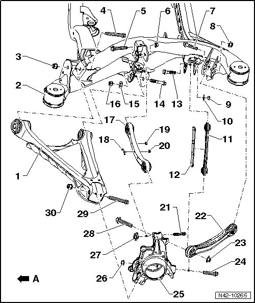

Rear Suspension
Control Arm and Tie Rod Assembly Overview
• Welding and straightening work on supporting or wheel carrying components of suspension is not permitted.
• Always replace self locking nuts.
• Always replace corroded bolts/nuts.
- Arrow A - direction of travel

1 Lower control arm
2 Subframe
• Removing and installing, refer to --> [ Subframe ] Service and Repair.
3 Self locking nut
• M14 x 1.5.
• 150 Nm + 90° additional turn.
• Always replace after removal.
4 Bolt
• M14 x 1.5 x 110.
• Always replace after removal.
5 Bolt
• M12 x 1.5 x 70.
• Always replace after removal.
6 Self locking nut
• M12 x 1.5.
• 90 Nm + 90° additional turn.
• Always replace after removal.
7 Bolt
• M12 x 1.5 x 70.
• Always replace after removal.
8 Self locking nut
• M12 x 1.5.
• 90 Nm + 90° additional turn.
• Always replace after removal.
9 Self locking nut
• M14 x 1.5.
• 180 Nm.
• Always replace after removal.
10 Eccentric washer
11 Tie rod
12 Stone protection plate
13 Eccentric bolt
• M14 x 1.5 x 82.
14 Eccentric bolt
• M14 x 1.5 x 105.
15 Eccentric washer
16 Self locking nut
• M14 x 1.5.
• 180 Nm.
• Always replace after removal.
17 Upper front control arm
18 Bracket
19 Self locking nut
• M6.
• 8 Nm.
• Always replace after removal.
20 Self locking nut
• M6.
• 8 Nm.
• Always replace after removal.
21 Bolt
• M14 x 1.5 x 110.
• Always replace after removal.
22 Upper rear control arm
23 Self-locking nut
• M16 x 1.5.
• 150 Nm + 90° additional turn.
• Always replace after removal.
24 Bolt
• M16 x 1.5 x 125.
• Always replace after removal.
25 Wheel bearing housing
26 Self locking nut
• M16 x 1.5.
• 150 Nm + 90° additional turn.
• Always replace after removal.
27 Self locking nut
• M14 x 1.5.
• 150 Nm + 90° additional turn.
• With securing plate.
• Always replace after removal.
28 Bolt
• M16 x 1.5 x 110.
• Always replace after removal.
29 Bolt
• M14 x 1.5 x 110.
• Always replace after removal.
30 Self locking nut
• M14 x 1.5.
• 150 Nm + 90° additional turn.
• Always replace after removal.